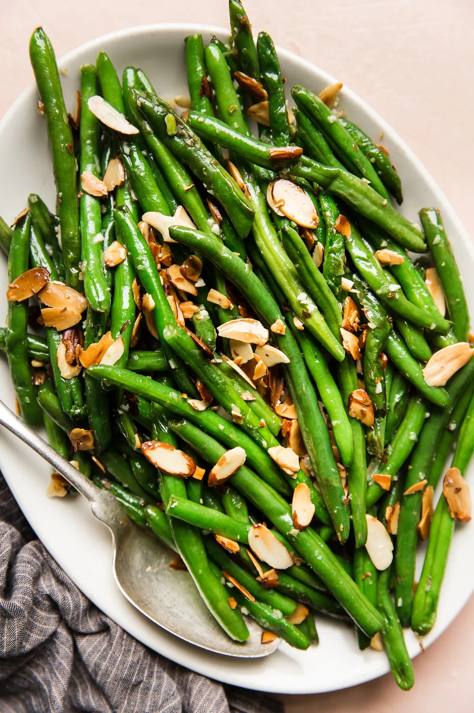

This green bean casserole is to die for!!

Green bean casserole, another staple at a Thanksgiving dinner!
The beauty of this recipe is it can be used in and out of Thanksgiving day
as it is an awesome side dish for any occasion.There are many variations of
this perfect side dish out there, including ones made with canned soup and canned green beans, some made in slow cookers,
those finished with cheddar cheese and breadcrumbs, and, of course, the one known as French's Green Bean Casserole
Ingredients
- 2 Lb. green beans
- Kosher salt
- 2 Tbsp. olive oil, split
- 1 Lb. crimini mushrooms, sliced
- 6 Tbsp. unsalted butter
- 4 large sprigs thyme
- 2 Tbsp. all purpose flour
- 1 1/4 Cups whole milk
- 1 Cup heavy cream
- 4 Garlic cloves, grated
- 1/2 Cup parmesan, grated
- Freshly ground black pepper
- 3/4 Cup French's fried onions
Step by step instructions
- Preheat oven to 375°. Working in batches, cook green beans in a large pot of boiling salted water until bright green and halfway to tenderness, about 3 minutes per batch. Drain and let cool; trim stem ends.
- Heat 1 Tbsp. oil in a large skillet over medium-high. Cook half of mushrooms, without stirring, until golden brown underneath, about 2 minutes. Toss and continue to cook, tossing occasionally, until browned on both sides, about 3 minutes more. Add 2 Tbsp. butter and 2 thyme sprigs to pan. Cook, tossing occasionally, until butter browns and mushrooms are dark brown and very tender, about 4 minutes longer. Season with salt and transfer to a plate. Repeat with 2 Tbsp. butter, salt, and remaining oil, mushrooms, and thyme.
- Melt remaining 2 Tbsp. butter in a large saucepan over medium-low. Whisk in flour and cook, whisking occasionally, until roux is golden brown and smells mildly nutty, about 4 minutes. Whisk in milk and cream. Increase heat and bring to a simmer, whisking often, and cook until béchamel sauce is thick and bubbling, about 5 minutes. Remove from heat and whisk in garlic and Parmesan; season with salt and pepper.
- Arrange green beans and mushrooms in a 2-qt. baking dish. Pour sauce over (it may not look like enough, but it will get saucier as it bakes). Cover tightly with foil and bake until sauce is bubbling, 25–30 minutes. Uncover and continue to bake until casserole is lightly browned on top and around the edges, 15–20 minutes longer. Top with fried onions and continue to bake just until onions are slightly darker and fragrant, about 3 minutes. Let sit 10 minutes to set before serving.
Very rich, taste as you cook. Can be too salty for some. Can consider using different fried onions that may be a bit more healthy. Enjoy!!
Next Recipe
Back to Mainpage